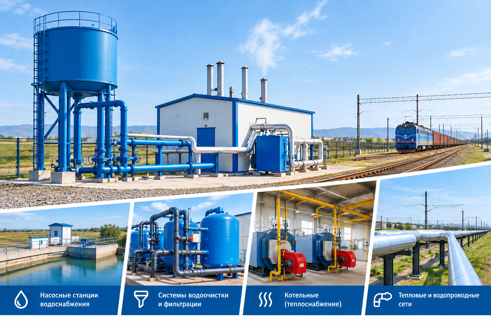

АО «Теміржолсу»
Надёжное снабжение
в ритме железной дороги
Технологическое обеспечение непрерывного цикла водо-теплоснабжения и отвода сточных вод инфраструктуры АО «НК «ҚТЖ».
О компании →Объекты водо- и теплоснабжения железной дороги Казахстана